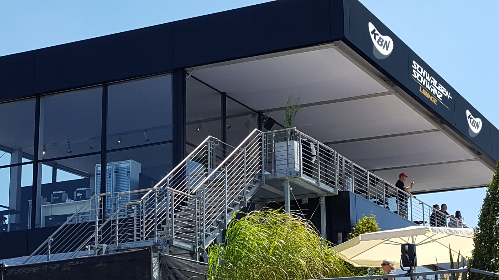
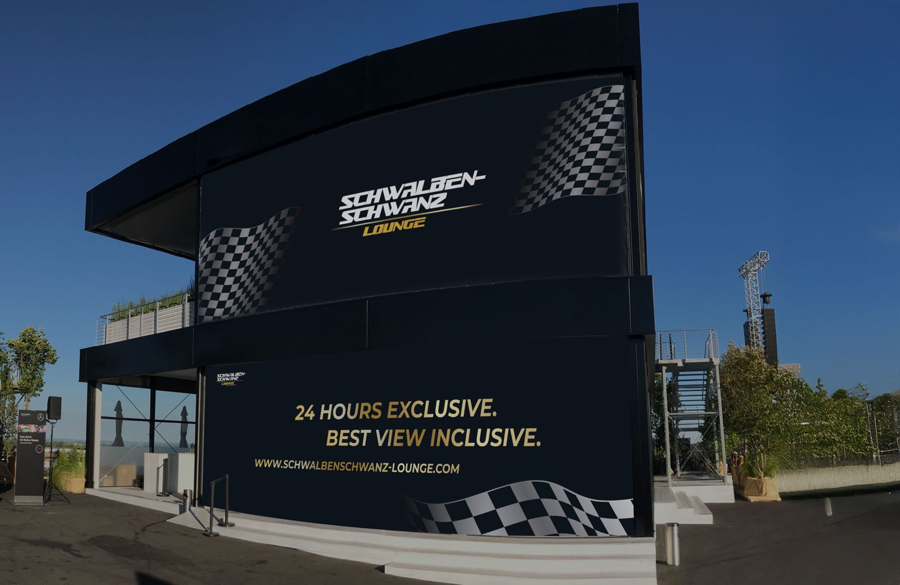
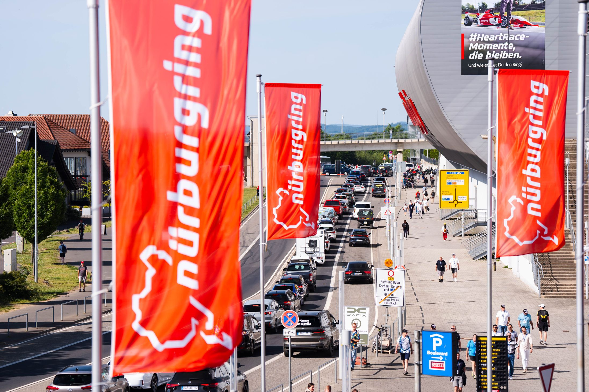
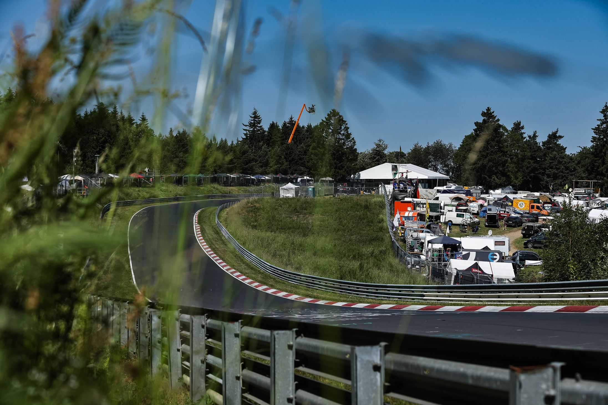
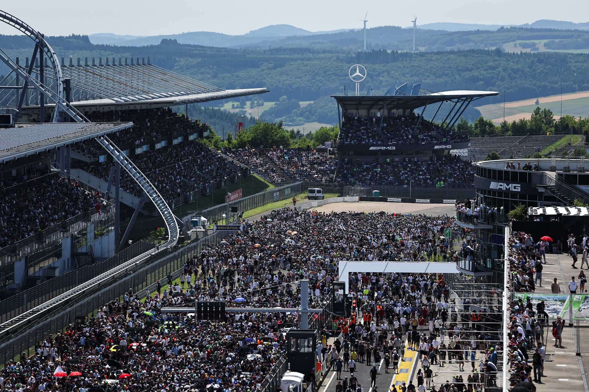
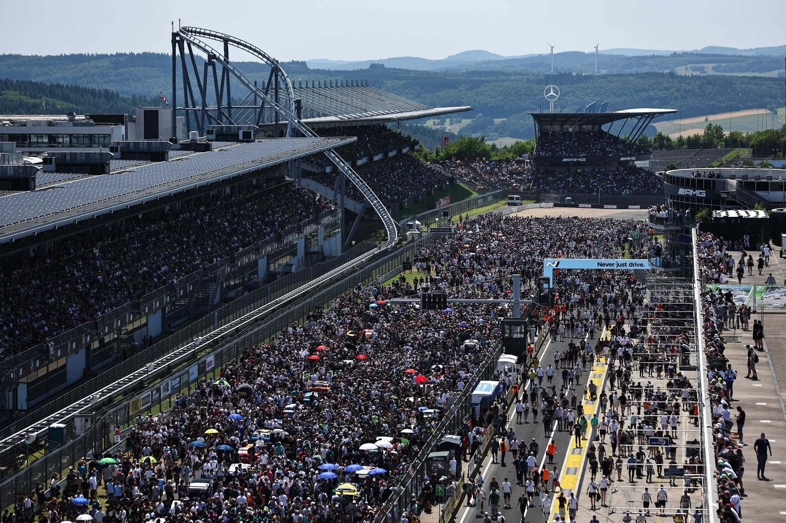
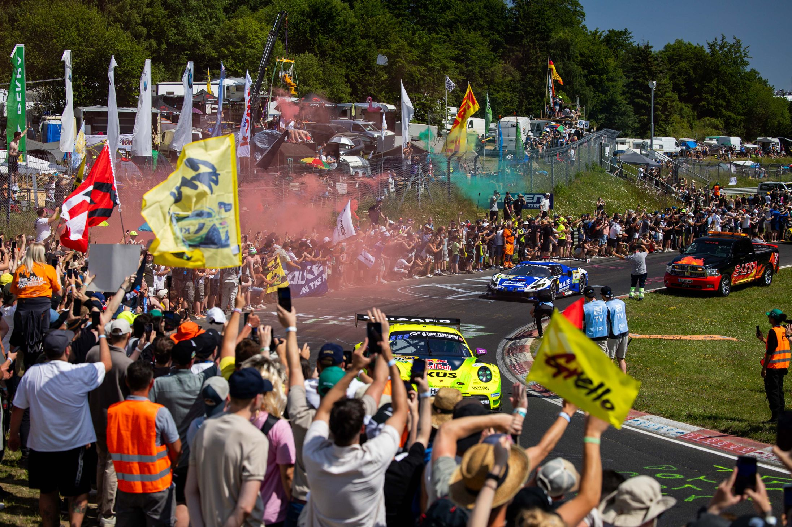
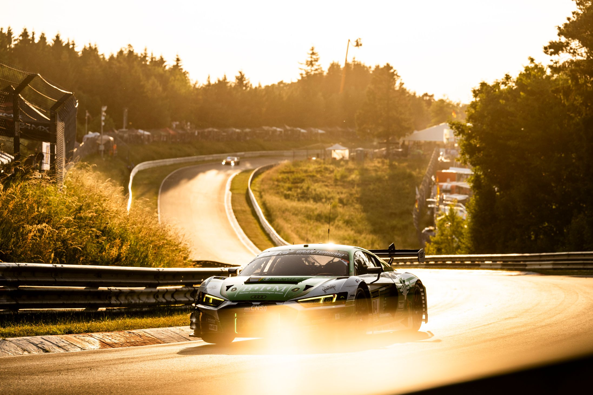
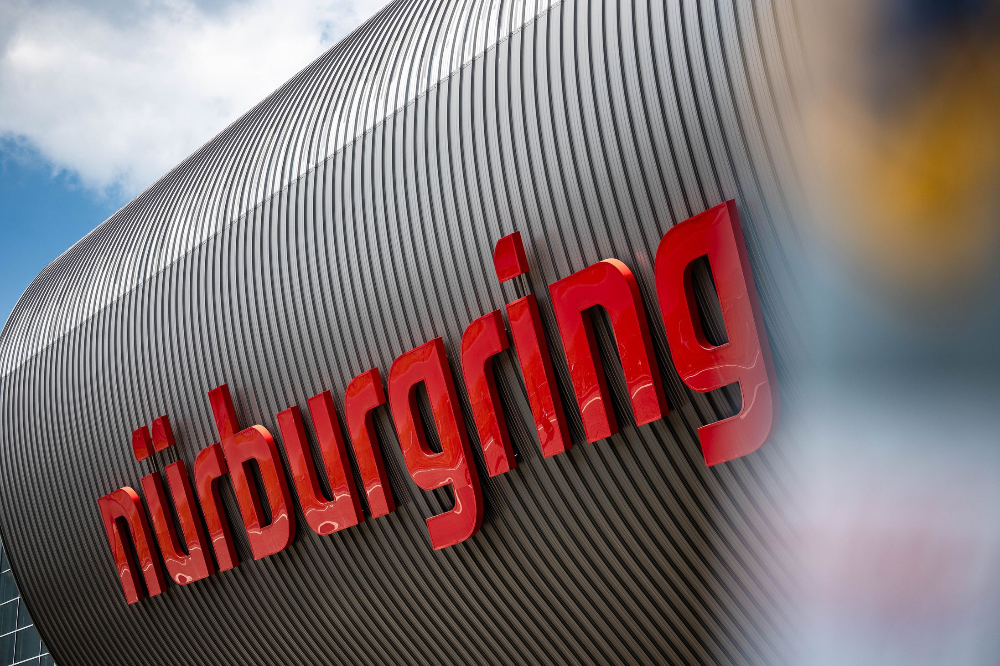

The Schwalbenschwanz Lounge — exclusive two-storey VIP hospitality at the ADAC RAVENOL 24h Nürburgring. Direct trackside view, paddock access, full BBQ buffet & drinks, free parking + private shuttle.
54th edition · 14–17 May 2026 · Race start Saturday 15:00 CEST
Reserve your seatDoubled lounge space — premium views from both levels.
BBQ buffet, drinks & catering — fully covered, all 4 days.
Direct trackside, exclusive videowall, paddock access.
Padded covered seats, parking + private shuttle.
The Nordschleife doesn't forgive — and that's exactly why we watch.
In the heart of the most demanding 24h race in the world. There is no place where you have a better experience.
See the 2026 lounge — two full floors, premium finish.


Unobstructed view of the racetrack of the legendary 24-hour race at the Nürburgring in an exclusive lounge with extraordinary ambiance. The around-the-clock live broadcast on numerous screens inside the lounge, including live ranking, guarantees you won't miss a second of the spectacular race. The lounge balcony offers a direct view of the exclusive, very large videowall set up on the other side of the racetrack especially for the Schwalbenschwanz Lounge.
Your advertisement on the screens inside the lounge for all four days: €1,800
200,000+ fans. Legendary corners. The most demanding race in the world — and you in the front row.







From the Netherlands, the Nürburgring is closer than most race weekends abroad. Drive in Friday morning, race-ready by Saturday lunch.
Free VIP parking + private shuttle. Book 4 or more VIP tickets and you receive a guaranteed parking space close to the Schwalbenschwanz Lounge. Our private shuttle runs continuously between the parking and the lounge entrance — no walking, no waiting.
Where to stay. Most international guests book in the Eifel region (Adenau, Daun, Mayen, Cochem) or stay one hour out near Köln/Cologne and combine the race with a city stop. The lounge organiser RingSpirit can advise on partner hotels — drop us a line at av@ringspirit.de.
Border crossing. No formalities between NL and DE. Make sure your Umweltplakette is on the windscreen if you plan to drive into Köln (the Nürburgring itself doesn't require one). Speed limits in Germany apply where signed; the autobahn between Köln and Nürburg has long unrestricted stretches.
The 24h Nürburgring has long been a magnet for Dutch race fans — the Nordschleife sits less than four hours from the Randstad, and Dutch GT3 teams and drivers regularly run on the full 25.4 km combined circuit. Recent years have seen growing Dutch interest in the Nordschleife, including high-profile testing visits by Formula 1 stars exploring GT racing.
Whether you come for the racing, the Eifel atmosphere, or simply because this is the only weekend a year you can watch a Mercedes-AMG, a Porsche 911, an Audi R8 and a Ferrari 296 fight wheel-to-wheel for 24 straight hours, the Schwalbenschwanz Lounge gives you the most comfortable view of it all — direct trackside, on two floors, with everything included.
Honest words from people who experienced the Schwalbenschwanz Lounge first-hand.
"Best decision we made all year. The view of the track is unmatched, the catering is genuinely premium, and the team thinks of every detail. We were back in the lounge within minutes thanks to the shuttle — zero stress."
"We came as a group of six and it felt like a private event. The lounge balcony directly opposite the videowall is something I haven't seen anywhere else at the Ring. Booking again for 2026."
"As a long-time 24h fan I was sceptical about VIP packages. The Schwalbenschwanz proved me wrong — the access, the food, the atmosphere. Worth every euro."
4-day full access for guests over 12 to the entire track (grandstands incl. paddock) and Schwalbenschwanz Lounge (Thursday–Sunday incl. catering). Including parking and shuttle service.
Book Now4-day full access for children under 12 to the entire track and Schwalbenschwanz Lounge (Thursday–Sunday) incl. catering.
Book NowTake the opportunity to present your brand to a wide audience! We offer two attractive sponsoring packages!
InquireTickets are not personalized and can be transferred at any time.
Our team takes a short pit stop on Saturday night and closes the lounge at 01:00. On Sunday from 08:00 we welcome you back warmly. On Sunday, arrival must be before 9:30 AM, as shuttle service to the VIP parking is not available again until 14:30 due to departure traffic.
Dogs are not permitted in the lounge, with the exception of guide dogs.
Tickets will be sent approximately 2–3 weeks before the event.
Track variants: GE = Full circuit incl. Nordschleife. Subject to change.